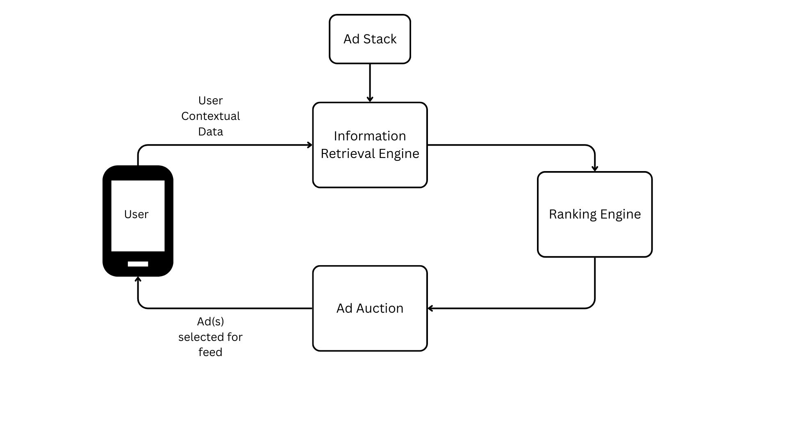
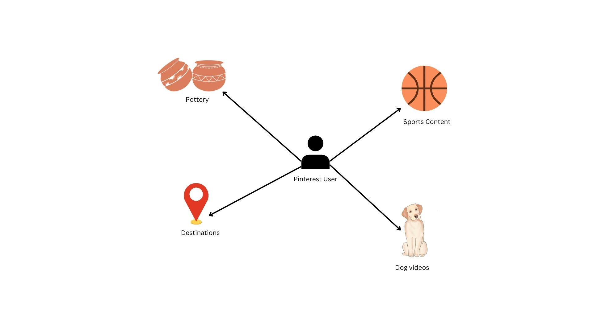

Epoch: 010, Loss: 89.9706
Epoch: 020, Loss: 21.5330
Epoch: 030, Loss: 6.1087
Epoch: 040, Loss: 4.2366
Epoch: 050, Loss: 2.0209Abstract
Ad revenue has become the primary lifeline for many modern companies. To optimize this stream, platforms don’t just show ads at random; they enlist hundreds of engineers and scientists to build algorithms that maximize payouts without compromising the user experience. These systems process millions of interactions to capture the predictive signals that drive business outcomes. Recently, the ad-tech industry has begun pivoting from traditional machine learning toward more sophisticated methods like graphs. In this post, we examine Pinterest’s history, strategy, and recent innovations. We then present a prototype Graph Neural Network (GNN) designed to optimize ad relevance, using a Graph Attention Network (GAT) framework trained on synthetic user data.
Introduction

Pinterest was founded in 2010 by Ben Silbermann, Paul Sciarra, and Evan Sharp. The idea came from a “failed” app idea called Tote, which was supposed to help users shop for items via their mobile devices. From the project, Ben and Paul found that many of their users enjoyed saving the items (images) and exploring items via pictures. Essentially, they discovered that users enjoyed a visual search experience. This became the vision for Pinterest. That is, they brought in Evan to help design a digital search experience that felt like creating your own digital pinboard.
After just a year of official operation, Pinterest emerged as one of the most popular platforms in the US, surpassing 10 million monthly active users by 2012. While initially viewed as a niche social media site where users curated and shared “boards,” the company eventually pivoted. They moved away from the traditional “social network” label to brand themselves as the internet’s premier visual search engine.
Following the lead of search giants like Google, Pinterest introduced promoted pins in 2013. This allowed companies to promote content via ad auctions, turning user discovery into a scalable business model. By the time the platform went public in 2019, Pinterest was grossing nearly $1.2 billion in annual ad revenue.
Today, that number is nearing $4.2 billion in revenue from ads. While Pinterest does have other streams of revenue, their primary revenue driver is their ad platform. Hence, Pinterest spends large amounts of money into the infrastructure and R&D of their largest moneymaker.
Ad Systems
The magic of Pinterest’s ad tech isn’t just a feat of engineering. While the platform’s infrastructure serves as the backbone, the logic driving it stems from deep research in auction theory and algorithmic game theory.
Before diving into the world of research in these two fields, let’s view the process of how these ads are shown from a high-level perspective.

In the diagram above, a session begins when a user opens the app, triggering the Information Retrieval (IR) engine to load contextual and user data alongside the current ad stack (the inventory of ads eligible for delivery). Because millions of ads compete for space simultaneously, Pinterest—and other ad-tech giants—uses this data to filter the stack. This IR stage essentially narrows the vast pool of available ads down to a relevant subset likely to interest the specific user.
This new list of a few thousand ads is loaded into the ranking engine, where various metrics are calculated (e.g. the probability of a click or a purchase). All of this data is then fed into the auction. The auction system uses these predictions, alongside each advertiser’s bid, to calculate a final score that determines the winner. A common example of this ranking metric is expected cost per mille (eCPM), as shown in Equation 3.1.
\text{eCPM} = (\text{Bid} \times P(\text{Action})) \tag{3.1}
Depending on the auction format (such as a second-price auction), the winner pays the designated amount and the feed is instantly populated with that ad.
This process is repeated millions of times a day. Every time a user opens the app, the entire sequence executes in milliseconds. Every second, Pinterest’s top-line revenue depends on this system running with both accuracy and efficiency.
Optimizing Bids and Clicks
The Theory of Auctions
To better understand this business model, let’s dive into how auction theory and its algorithmic implementation provide the tools Pinterest needs to stay profitable. Most of us have encountered an auction at some point: an item is presented, and if it piques our interest, we place a bid to win it. From the auctioneer’s perspective, the goal is to offer items of value to the audience and reap the financial rewards of those competing bids.
From the bidder’s perspective, the goal is to acquire an item at the lowest possible price to maximize consumer surplus. Meanwhile, the auctioneer aims to maximize the financial payout by extracting as much “willingness to pay” from the audience as possible. Of course, different auction formats can be weighted to favor one side over the other. To find a balance that benefits the entire system, we must look at the problem through the lens of optimizing social welfare.
In 1961, economist William Vickrey introduced an auction format designed to optimize social welfare. This second-price auction [1] became renowned for proving that if the winner pays the second-highest price rather than their own bid, participants are incentivized to bid their true valuation instead of “shading” their bids to save money. The formal proof for this is shown below.
1. Case: Underbidding (b_i < v_i) \begin{array}{l|c|c} \text{Condition} & u_i(v_i, B) & u_i(b_i, B) \\ \hline B < b_i & v_i - B & v_i - B \\ b_i < B < v_i & v_i - B > 0 & 0 \\ B > v_i & 0 & 0 \\ \end{array} Result: u_i(v_i, B) \geq u_i(b_i, B).
2. Case: Overbidding (b_i > v_i) \begin{array}{l|c|c} \text{Condition} & u_i(v_i, B) & u_i(b_i, B) \\ \hline B < v_i & v_i - B & v_i - B \\ v_i < B < b_i & 0 & v_i - B < 0 \\ B > b_i & 0 & 0 \\ \end{array} Result: u_i(v_i, B) \geq u_i(b_i, B).
In essence, Vickrey’s math explains the nature of bidding: if you underbid, you risk losing an item that was worth more to you than the winning price (resulting in lost utility). Conversely, if you overbid, you run the risk of winning but paying more than your true valuation—another form of utility loss. If you format the auction where participants can bid their true value v_i but only pay the second highest bid b_i, then participants can play honestly since their strategy is separate from their cost.
Note: This is from the simple, single-item auction that Vickrey proposed. To generalize this to a multi-item auction, we’d use the VCG auction [2] and [3].
Algorithmic Auctions
While Vickrey and VCG auctions are elegant on paper, scaling them to the magnitude required by platforms like Pinterest requires algorithmizing the process. To adapt the Vickrey second-price auction for high-volume environments, platforms utilize the Generalized Second-Price (GSP) auction [4] and [5]. The general algorithm for a GSP is enumerated below.
- Initialize Inputs: Define a set of bidders \mathcal{N} = \{1, 2, \dots, n\} and a set of available slots k. Each bidder i submits a bid b_i.
- Rank Bidders: Sort the bidders in descending order such that:b_{(1)} \ge b_{(2)} \ge \dots \ge b_{(n)}where b_{(j)} denotes the bid of the player in the j-th position.
- Allocate Slots: Assign the bidder with the j-th highest bid to the j-th slot, for all j \in \{1, \dots, \min(n, k)\}.
- Calculate Per-Click Payment: For a bidder i assigned to slot j, the price per click p_j is determined by the bid of the player in the position immediately below them:p_j = b_{(j+1)}
Essentially, we sell k slots to the highest bidders from our set of bidders \mathcal{N}. The highest bidder gets the first slot (the best slot) followed by the next bid, etc. The payment each bidder pays is the bid of the next highest bid (hence the second-price nature of the auction).
Ad Relevance through Graph Learning
As previously noted, a successful auction must optimize for both revenue and relevance. Without relevant content, the user experience suffers, which eventually devalues the platform’s ad inventory. Conversely, when ads are highly relevant, the probability of engagement increases, raising the underlying value of those slots. So, bid rankings are not determined by monetary value alone. They incorporate an ad relevance score. By calculating a weighted product of the bid price and its relevance to a specific user, the platform determines the final auction bid to be used in ranking (as shown in Equation 3.1).
The challenge, then, is determining how a platform like Pinterest can best predict which ads will be most relevant to a specific user. One powerful approach is to model user interactions as a graph.

While the illustration above is a simplified representation of a true production graph, it accurately reflects the complex relationships we can model. In this structure, users and content categories act as nodes, and interactions form edges that link them. Every time a user engages with a pin, they create a new edge between themselves and that object’s category. Importantly, these edges are dynamic: as engagement with a specific category increases, the weight of that edge grows, meaning a stronger connection between the user and that interest.
Graphs are powerful for this type of modeling because they allow us to predict user behavior based on structural patterns. If a user’s network is concentrated, with heavy weights on only a few edges, they are likely to continue deepening those specific niche interests. Conversely, if a user maintains a diverse network with broad connections, the probability of them engaging with a “new” category is much higher. By analyzing these topological patterns, we can determine whether to serve a user more of what they love or introduce them to something new.
Predictions via Graphs
Modeling behavior with graphs is cool, but how do we turn this structure into actual predictions? Specifically, how do we predict which content a user will engage with next? Fortunately, graphs can work just like tabular data. Instead of predicting a simple scalar variable y, our goal is to predict the next edge a user will generate. From the picture above, this means predicting if the user will follow a current edge path to a certain category or if they will create a new one.
Note: If you’d like to know how Pinterest actually generates pins for a given user, see their blog post here.
Mathematically, we formulate our problem using graph notation. Let G = (V,E), where V is the set of all of our vertices in a graph (users and content) and E is the set of all edges between our vertices. To simplify our problem, we’ll assume that that users cannot have edges connecting each other (i.e. users are only connected to content). Therefore, a path e exists between a user u and a pin p if a user has interacted with said content. The goal then is to learn an embedding function that yields a d dimensional vector for every u \in V. In normal english again, we want to learn a mapping that would produce a list of items that are relevant to each user in our user pool.
Graph Attention Networks (GAT)
There are many different ways we can implement a solution to our problem formulation above. Many popular methods involve using graph neural networks (GNNs), specifically graph convolutional neural networks (GCNs) to handle the complexities and scale of graph data. While a generic GCN would perform adequately on this kind of data, we can do even better by leveraging a new framework known as graph attention networks (GAT) [6].
In a generic GCN, the model assumes that neighbors of a given node (i.e. content viewed by a given user) are weighted equally. While a valid assumption, this introduces problems when we begin to train the model on older data and it continues to assume homogeneity in weights across all neighbors. Basically, a generic GCN would still value your pin from 3 years ago the same as a pin from yesterday.
To account for these more dynamic weighting problems, we turn to GATs for their specific attention to these details. GATs are setup in a way where context, time, etc. are all taken into account when calculating the embedding function. The process of how a GAT does this is enumerated below.
- Apply a linear transformation on a given node’s features with W as the weight matrix: h'_i = W h_i
- Calculate the “importance” of a node j to a given node i using an attention mechanism a: e_{ij} = \text{LeakyReLU}\left(\vec{a}^T [Wh_i \, \Vert \, Wh_j]\right)
- Normalize coefficients so we can compare across neighborhoods: \alpha_{ij} = \text{softmax}_j(e_{ij}) = \frac{\exp(e_{ij})}{\sum_{k \in \mathcal{N}_i} \exp(e_{ik})}
- The output vector is created via a weighted sum of it’s neighbors features: h'_i = \sigma\left(\sum_{j \in \mathcal{N}_i} \alpha_{ij} Wh_j\right)
Essentially, the GAT framework prioritizes the recent over the past. As a user browses more frequently in the present, the GAT places more weight on their most recent activity and such presents more content based on their current interests.
Training and Results
Note: Just as a reminder, this is all fictional/synthetic data.
Our data consists of 10,000 users and 50,000 items. Using these data points, we simulate interactions between the users and items based on user interests (e.g. someone interested in home decor is more likely to interact with a home decor item). Using this data, we create a heterogenous graph to model the interactions between user and item nodes. We also allow for ad nodes to be included as special item nodes.
After creating our heterogenous graph, we prepare this data for training by converting the feature space into their proper tensor representations. Once that is prepared, we define our GAT model. This is a 2-depth model with neighbor features going into 32 hidden channels then being outputted into 16 channels. To decode these embeddings, we define a RelevanceLinkPredictor model to calculate, well, the relevance of the link for a given user-ad pair. These two models are then formed as part of the full GNN model, where we encode our data and decode it at the end to obtain probability of a click.
After training our model, we use an AUC score to determine how well our model does at predicting relevant ads for our users. The AUC score we obtained is shown below.
Test AUC: 0.6428Our AUC score of .64 indicates that our model is capturing some, but not all of the relevant signals from our data. Considering this is all synthetic data and we didn’t provide “great” signals in the data, this makes sense. In practice, we’d like to get this score closer to .8 or .9, but not too high where it wouldn’t generalize well (i.e. overfit the training data).
Another fun test is understanding how our model predicts. To do this, we choose a random user below.
shape: (1, 3)
| user_id | age_group | main_interest |
|---|---|---|
| i64 | str | str |
| 1000 | "18-25" | "Food" |
Here, we have a user that is part of our “younger” demographic who mainly uses this platform to interact with food items. Below are some of the ads this user has interacted with in the past.
shape: (10, 3)
| item_id | category | is_ad |
|---|---|---|
| i64 | str | bool |
| 20 | "Home" | true |
| 22 | "Home" | true |
| 26 | "Animals" | true |
| 32 | "Food" | true |
| 35 | "Sports" | true |
| 38 | "Sports" | true |
| 61 | "Animals" | true |
| 64 | "Exercise" | true |
| 67 | "Fashion" | true |
| 68 | "Animals" | true |
Our user has interacted with a diverse area of items. This data is what our GAT uses to understand what ads would be most relevant for this user, along with their interest profile. To see how our model would rank the first 10 ads in our ad depot, we send those ads through the model with our user and get the following rankings.
[(2, 1.0),
(1, 0.9999999),
(0, 0.83670586),
(8, 0.24470966),
(6, 0.17266823),
(4, 0.1658946),
(5, 0.11218947),
(3, 0.09960052),
(9, 0.09643514),
(7, 0.0514786)]The highest ranking ads would be 2, 1, and 0 with very high probability, followed by others with much lower probability. Looking back at Equation 3.1, we would take these probabilites along with the bids for these ads to calculate the “final bid” for each advertiser.
Conclusion
In this post, we traced the evolution of Pinterest from a visual discovery engine to a multi-billion dollar ad platform. We explored why ad revenue is the core of the company’s profitability and why scaling that revenue requires a combination of economics and engineering. By bridging auction theory with graph neural networks, we saw how Pinterest optimizes for both high-yield bids and a premium user experience. Finally, we demonstrated how modeling user-item interactions through GAT allows the platform to predict relevance with high accuracy, ensuring the right ad reaches the right user.
While there are many ways to model ad relevance, we hope this post has provided a clear blueprint on how to view the ads business. By combining robust economic theory with sophisticated data structures like graphs, you can better understand your own customers and build a scalable system that balances profitability with user value.
References
[1]
W. Vickrey, “Counterspeculation, auctions, and competitive sealed tenders,” The Journal of Finance, vol. 16, no. 1, pp. 8–37, 1961.
[2]
T. Groves, “Incentives in teams,” Econometrica, vol. 41, no. 4, pp. 617–631, 1973, doi: 10.2307/1914085.
[3]
E. H. Clarke, “Multipart pricing of public goods,” Public Choice, vol. 11, no. 1, pp. 17–33, 1971, doi: 10.1007/BF01726210.
[4]
B. Edelman, M. Ostrovsky, and M. Schwarz, “Internet advertising and the generalized second-price auction: Selling billions of dollars worth of keywords,” American Economic Review, vol. 97, no. 1, pp. 242–259, 2007, doi: 10.1257/aer.97.1.242.
[5]
H. R. Varian, “Position auctions,” International Journal of Industrial Organization, vol. 25, no. 6, pp. 1163–1178, 2007, doi: 10.1016/j.ijindorg.2006.10.002.
[6]
P. Veličković, G. Cucurull, A. Casanova, A. Romero, P. Liò, and Y. Bengio, “Graph attention networks,” arXiv, 2017, doi: 10.48550/arxiv.1710.10903.